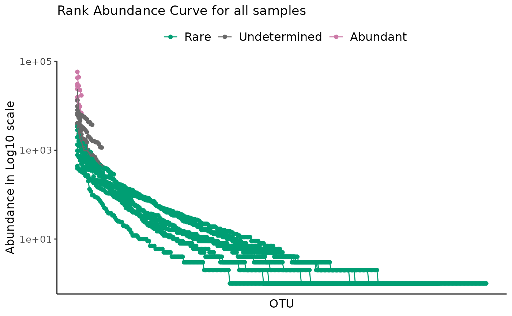
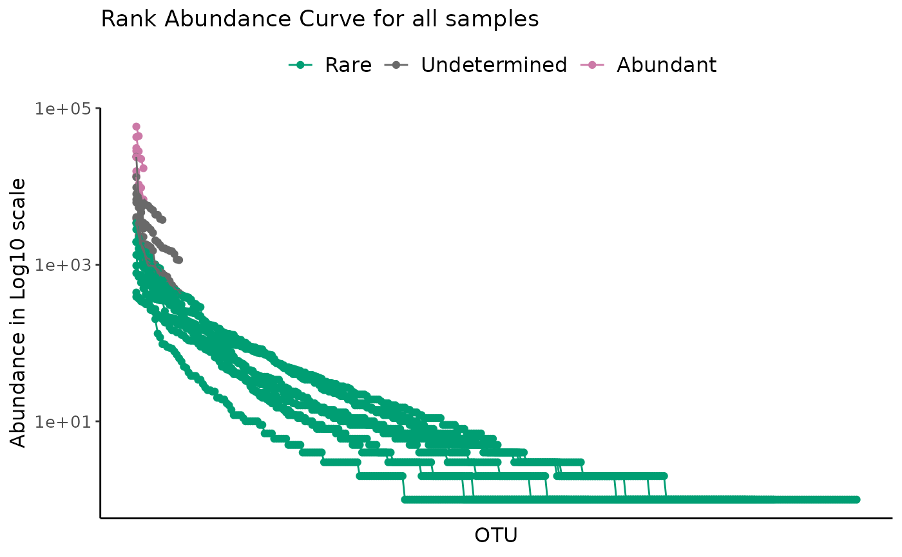

Plot Rank Abundance Curve of classification results
Source:R/plot_ulrb_clustering.R
plot_ulrb_clustering.RdPlots the clustering results from define_rb().
Usage
plot_ulrb_clustering(
data,
sample_id = NULL,
taxa_col,
plot_all = FALSE,
samples_col = "Sample",
classification_col = "Classification",
abundance_col = "Abundance",
log_scaled = FALSE,
colors = c("#009E73", "#F0E442", "#CC79A7"),
...
)Arguments
- data
a data.frame with, at least, the classification, abundance and sample information for each phylogenetic unit.
- sample_id
string with name of selected sample.
- taxa_col
string with name of column with phylogenetic units. Usually OTU or ASV.
- plot_all
If TRUE, will make a plot for all samples with mean and standard deviation. If FALSE (default), then the plot will illustrate a single sample, that you have to specifiy in sample_id argument.
- samples_col
name of column with sample ID's.
- classification_col
string with name of column with classification for each row. Default value is "Classification".
- abundance_col
string with name of column with abundance values. Default is "Abundance".
- log_scaled
if TRUE then abundance scores will be shown in Log10 scale. Default to FALSE.
- colors
vector with colors. Should have the same lenght as the number of classifications.
- ...
other arguments.
Value
A ggplot object with clustering results from define_rb().
Details
This works as a sanity check of the results obtained by the unsupervised learning method used to classify species. This is specially important if you used an automatic number of clusters.
The function works for either a single sample (that you specify with sample_id argument), or it can apply a centrality metric for species across all your samples (plot_all = TRUE).
Examples
classified_species <- define_rb(nice_tidy)
#> Joining with `by = join_by(Sample, Level)`
# Standard plot for a single sample
plot_ulrb_clustering(classified_species,
sample_id = "ERR2044669",
taxa_col = "OTU",
abundance_col = "Abundance")
 # All samples in a dataset
plot_ulrb_clustering(classified_species,
taxa_col = "OTU",
abundance_col = "Abundance",
plot_all = TRUE)
#> Warning: Removed 197 rows containing missing values or values outside the scale range
#> (`geom_segment()`).
# All samples in a dataset
plot_ulrb_clustering(classified_species,
taxa_col = "OTU",
abundance_col = "Abundance",
plot_all = TRUE)
#> Warning: Removed 197 rows containing missing values or values outside the scale range
#> (`geom_segment()`).
 # All samples with a log scale
plot_ulrb_clustering(classified_species,
taxa_col = "OTU",
abundance_col = "Abundance",
plot_all = TRUE,
log_scaled = TRUE)
#> Warning: Removed 197 rows containing missing values or values outside the scale range
#> (`geom_segment()`).

# All samples with a log scale
plot_ulrb_clustering(classified_species,
taxa_col = "OTU",
abundance_col = "Abundance",
plot_all = TRUE,
log_scaled = TRUE)
#> Warning: Removed 197 rows containing missing values or values outside the scale range
#> (`geom_segment()`).
